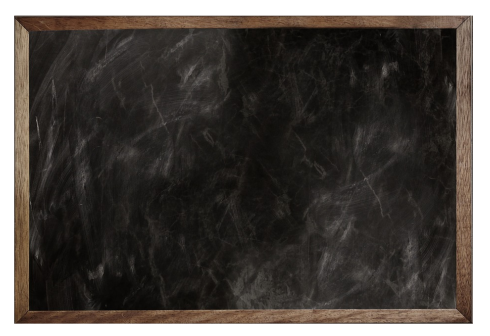
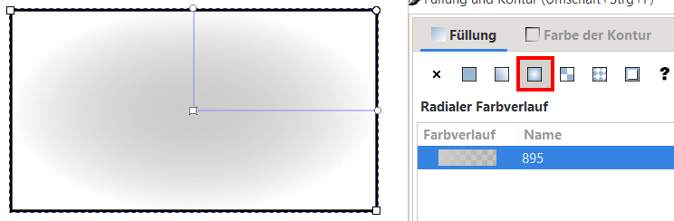

2.1. Advanced Inkscape Tipps¶
2.1.1. Unterschied Objekt / Pfad¶
Objekt in Pfad umwandeln¶
In der Menüleiste unter Pfad → Objekt in Pfad umwandeln ( oder Shift + Str + C ) können Objekte in Pfade umgewandelt werden

Pfadecken / Anstiege¶
Zeichnen Sie mit dem Rechtecktool ein Rechteck und benutzen Sie das Edit Path by Nodes Tool um die Ecken abzurunden
Konvertieren Sie das Rechteck mit dem abgerundeten Ecken in einen Pfad
Rechteck Objekt ohne Kantenverrundung |
Rechteck Objekt mit Kantenverrundung |
Rechteck Pfad mit einzelnen Knotenpunkten und Anstiegen |
|---|---|---|

|
Durch die Überführung eines Objektes in einen Pfad, gehen Objekteigenschaften verloren und können nicht wieder zurück transformiert werden.
An den Eckpunkten entstehen Knoten (ggf. mit Anstiegen).
Linien und Objektkonturen können auch in Pfade umgewandelt werden.
In unserem Fall geht also die Option verloren, die Verrundung an dem Rechteck zu ändern.
Versuchen Sie nun die Verrundung an dem Pfad wieder zu entfernen, so dass das Rechteck aussieht wie vorher
Variante 1: Ausrichten Tool mit Knoten


Variante 2: Position der Knoten über Fenster oben definieren


An jedem Knoten kann der Anstieg geändert werden.
Soll der Anstieg entfernt werden, so muss der Kreis wieder auf den Punkt geführt werden (zum snapping müssen mindestens die zwei Sachen rechts aktiviert sein)
Variante 3: Verwendung der Optionen in der Tool-Control-Bar
Die Optionen sind auch hilfreich um z.B. in einer beliebigen Form einen stetigen Übergang zu erzeugen (mit
Symmetric nodes)

Bild aus Inkscape Dokumentation
Wollen wir nun gezielt ein Anstieg am Knotenpunkt erstellen, so gibt es hier zwei Möglichkeiten
Variante 1: Am Punkt direkt einstellen mit Shift + Ziehen in gewünschte Richtung

Variante 2: Linie verformen

Wollen wir einen stetigen Übergang zur Nachbarlinie, so empfiehlt sich die Variante über die Tool-Control-Bar:
Variante 3: Verwendung der Optionen in der Tool-Control-Bar
Boolsche Operationen¶
Auf Objekten und Pfaden sind Boolsche Operationen möglich. Wird dies auf Objekten angewandt, so werden diese automatisch zum Pfad umgewandelt.
Die Boolsche Operation wird immer auf das darunterliegende Objekt angewandt. (siehe Roten Kreis im Beispiel unten)

Linien und Objektkonturen können ebenfalls in Pfade umgewandelt werden.

Möchte man eine Linie (also mit Dickeneigenschaft) von einem Objekt abziehen, so muss die Linie vorher über Kontur in Pfad umwandeln umgewandelt werden.
DIVISION MIT LINIE ALS KONTUR
Wird der Kreis durch eine Linie (mit Kontur) geschnitten, so entstehen am Schnittpunkt zwischen dem Kreisaußenkanten und der Linie neue Knoten

DIVISION MIT LINIE ALS PFAD
Wird die Linie in ein Pfad umgewandelt, so kann diese nun vom Kreis abgezogen werden.
ToDo:
Erstellen Sie nun die Sonne aus unserem ersten Praktikum mit Hilfe der boolschen Operationen
Sie müssen ggf. Gruppierungen aufheben und Objekte über Pfad vereinigen “neu zusammen führen” um diese mit einmal von einem anderen Objekt abzuziehen.
Wenn Sie ALT + Maustaste gedrückt halten können Sie darüber nur Objekte selektieren die Sie dabei berühren

finale Ergebnis mit Sonne als ein Pfad (alle zusammen mit Vereinigung zusammengeführt)
Auf diesen Pfad kann wiederum auch eine Kontur angebracht werden
Pfadkontur erweitern¶
Durch die Konvertierung zum Pfad haben wir nun die Eigenschaft verloren die Dicke der Linie einfach zu ändern. Wollen wir trotzdem die Dicke ändern gibt es eine Option die auch für Pfade funktioniert, jedoch nur in alle Richtungen gleichzeitig.

Der Pfad wird um eine feste Breite erweitert
Der Pfad wird um eine feste Breite geschrumpft
Der Versatz lässt sich dynamisch in beide Richtungen (Erweitern ↔ Schrumpfen)
Der Versatz lässt sich dynamisch nur erweitern
2.1.2. Selektionsmöglichkeiten¶
Mit Maus Selektionslinie zeichnen¶
Wenn Sie ALT + Maustaste gedrückt halten können Sie darüber nur Objekte selektieren die Sie dabei berühren


2.1.3. Pfadeffekte (Bemaßung)¶
Ich habe bisher nicht viel mit Pfadeffekten gearbeitet, was mir jedoch sehr praktisch erscheint ist der Effekt Bemaßung
Pfadeffekte hinzufügen durch Anklicken des Pfades und dann das + Symbol im Pfadeffekte Menü (Rechts)
Fig. 2.1 Übersicht über die Pfadeffekte¶
Hier müssen Sie mal etwas mit den Einstellungen spielen und schauen wie Ihnen die Darstellung am besten gefällt

Hilfreich ist es sicher die Genauigkeit der Bemaßung einzustellen und Liniensegmente auszuschließen (über die Segementindizes, welche eingeblendet werden können)

Anzeige der Segmentenummer die zum Ausschließen der Bemaßung verwendet werden kann

Die Bemaßung gibt immer die Größe des Objektes und nicht der Kontur wieder
Bemaßung ohne Kontur:

Bemaßung mit Kontur (Kontur wird in Bemaßung nicht Berücksichtigt, in der Größe oben jedoch schon):
Wollen Sie mit Kontur arbeiten und trotzdem über die obere Leiste die Größe ändern, so müssen Sie für die Größenänderung die Kontur kurz wieder ausschalten
Falls jemand ein anderen sinnvollen Pfadeffekt kennt, bitte gerne Bescheid geben!
2.1.4. Maßeinheiten auf dem Monitor einstellen¶
Wenn Sie die Darstellung auf dem Monitor mit den realen Maßen abgleichen wollen, können Sie z.B. über Einstellungen ( Menüleiste: Bearbeiten → Einstellungen oder Shift + Str + P ) unter Benutzeroberfläche unter Zoom Korrektur den Wert genau einstellen in dem Sie z.B. ein Linieal an Ihren Monitor halten.
Damit dies auch wirklich klappt müssen Sie noch den Zoom auf 100%:
→ rechts unten in der Ecke oder die Taste 1 auf der Tastatur drücken

2.1.5. Objekte einfügen an Originalpositon (für Kopie in andere Ebene)¶
Hilfreich um den Inhalt von einer Ebene in eine andere zu kopieren ohne die Position zu ändern
Einfügen an Mausposition :
STR+VEinfügen an Originalposition:
STR+ALT+V
2.1.6. Bezier-Pen¶

Fig. 2.2 Bild aus Inkscape Dokumentation¶
Durch linke Maustaste gedrückt halten + Mausbewegung entsteht eine Kurve
Rechte Maustaste beendet den Modus
2.1.7. Textanpassungen¶
Um Platz bei Beschriftungen zu sparen, aber auch weil ich es optisch ansprechender finde, verringere ich oft den vertikalen Zeilenabstand und den horizontalen Zeichenabstand.

2.1.8. Pixelgrafiken automatisch in Vektor umwandeln¶
Um eine Pixelgrafik in eine Vektorgrafik umzuwandeln, muss die Pixelgrafik ausgewählt sein. Anschließend in der Menüleiste: Pfad → Bitmap nachzeichnen


{kind=link}
{kind=link}
{kind=link}
{kind=link}
{kind=link}
{kind=link}
{kind=link}
{kind=link}
{kind=link}
{kind=link}
{kind=link}
{kind=link}
{kind=link}
{kind=link}
{kind=link}
{kind=link}
{kind=link}
{kind=link}
{kind=link}
{kind=link}
{kind=link}
{kind=link}
Für das Beispiel habe ich auf Mehrere Scans (damit mehrere Farben erkannt werden), anschließend Farben ausgewählt und dann 4 (Anzahl der Farben) eingestellt und mit Aktualisieren die Vorschau aktualisieren.
Der Algorithmus arbeitet besonders gut bei großen Unterschieden in Helligkeiten und Farben wie in diesem Beispiel

Durch Ok wird anschließend das Vektorbild über das Pixelbild gezeichnet. Dabei entsteht eine Gruppe aus der Anzahl der Farben (Auflösen der Gruppe mit Str + Shift + G).
Bei einfarbigen Pixelgrafiken wie Logos klappt es auch sehr gut, wobei hier der Einmalige Scan ausreicht.
Fig. 2.4 Inkscape Logo (png)¶
{kind=link}
Als .png gespeichert (vor der Umwandlung):
Als .svg gespeichert (nach der Umwandlung):
{kind=link}
2.1.9. Ausschneidemaske (Pixelbilder croppen)¶
Mit der Maske wird ein darüberliegendes Objekt (hier ein grünes Rechteck mit 50% Transparenz damit man besser sieht was darunter liegt) das darunterliegende Objekt (in unserem Fall ein Pixelbild) ausgeschnitten.
Die Farbe & Transparenz der Maske haben keinen Einfluss, nur die Form ist entscheidend.
{kind=link}
Fig. 2.5 Beispielbild mit grüner Maske darüber (mit der ausgeschnitten werden soll)¶
Beide Objekte selektieren (und in gewünschter Reihenfolge anordnen) und danach in der Menüleiste: Objekt → Ausschneidepfad → Setzen
{kind=link}
Ergebnis ist nun ein ausgeschnittenes Bild:
{kind=link}
Die Maske und das darunterliegende Objekt sind jedoch weiterhin vorhanden und können über die Menüleiste: Objekt → Ausschneidepfad → Freigeben wieder zurück geholt werden (wenn man z.B. die Maske anpassen möchte)
{kind=link}
Neben dem Ausschneidepfad gibt es noch die Maske die prinzipiell sehr ähnlich funktioniert, jedoch auch Transparenz in der Maske berücksichtigt.
Ich habe jedoch bisher keinen Anwendungsfall dafür gefunden.
{kind=link}
2.1.10. Musterfüllung¶
Gerade für technische Darstellung möchte man manchmal statt einer Farbfüllung eine Musterfüllung verwenden.
{kind=link}
Dies ist in Inkscape ohne Probleme möglich, das Problem ist nur, dass die vorgegeben Füllung auf den ersten Blick für technische Zwecke nicht sehr nützlich sind.

Die Muster können jedoch durch in Größe, Position und vor allem Orientierung geändert werden. Dadurch können die Muster mit dem Namen Streifen mit einer Veränderung des Winkels gut verwendet werden.
{kind=link}
Um das Muster zu ändern muss dies mit dem Edit Path by Nodes Tool angepasst werden, wobei mit dem Kreis der Winkel und mit dem Rechteck die Größe geändert werden kann

Fig. 2.6 Veränderung der Musterfüllung mit Edit Path by Nodes Tool¶
Will man nun noch die Farbe des Musters verändern muss man einen kleinen Umweg gehen.
Das Objekt auswählen und in der Menüleiste: Erweiterung → Farbe → Farbe ersetzen anklicken.

Anschließend die zu ersetzende Farbe und die Neue Farbe wählen.
Es werden dann ebenfalls die Konturen (wenn diese schwarz waren) in der Farbe angepasst. Dies kann jedoch leicht geändert werden indem die Konturfarbe einfach neu definiert wird.

Als zu ersetzende Farbe schwarz auswählen. ℹ️Ansonsten die Pipette verwenden um den Farbton zu treffen
{kind=link}
Um Grautöne zu erhalten die Sättigung auf 0, den Alphawert auf 100 und über die Helligkeit den Grauton auswählen
So könnte es z.B. aussehen:

Eigene Muster erstellen¶
Wer doch gerne sein eigenes Muster erstellen möchte, kann dies auch tun über die Menüleiste: Muster → Objekte in Füllmuster umwandeln
Bei der Erstellung des Musters z.B. wie unten zu sehen bei Linien die in quer gehen daran denken, dass in den Ecken das Muster auch gefüllt sein muss

2.1.11. Gradient¶
Wenn überhaupt würde ich nur Gradienten mit geringem Helligkeitsunterschied empfehlen
Mit dem Gradient Tool kann eine Gradient-Füllung direkt in dem Objekt gezeichnet werden.
Jedem Punkt kann (z.B. durch Edit Path by Nodes Tool angeklickt und eine Farbe zugeordnet werden (nicht in der Animation dargestellt)

Fig. 2.7 Gardienten erstellen¶
In Füllung und Kontur können zudem noch ein Radialer Gradient eingestellt werden:
{kind=link}
Radialer Gradient
2.1.12. Text mit Hintergrund¶

Wird ein Text auf Grund des Hintergrundes nicht mehr gut sichtbar, so empfiehlt es sich, diesen durch eine zusätzliche Hintergrundfüllung besser sichtbar zu machen. In Inkscape gibt es dazu ein Extra Filter der den Vorteil besitzt, dass sich die Box dann automatisch dem Text anpasst, wenn dieser geändert wird.
{kind=link}
a) Text auswählen. Danach unter Filter → Füllung und Transparrenz → Hintergrund füllen

b) Filter → Filtereditor

c) Füllen auswählen und Füllfarbe und Deckkraft anpassen

d) Unter Allgemeine Filtereinstellung kann die Position und Größe angepasst werden
2.1.13. Gitter 3D¶
DOKUMENTENEINSTELLUNGEN
(SHIFT + STR + D) oder (Menu bar → Datei → Dokumenteneinstellungen...)
Reiter: Gitter
{kind=link}
2.1.14. Objekt in isometrische Ansicht verformen¶
ggf. anpassen für andere Orientierung
Ausgangskörper:

isometrische Ansicht:

Erstellung der isometrischen Ansicht:
a) Größe in y auf 86,6% verringern


b) 30° horizontal scheren
{kind=link}

c) 30° gegen den Uhrzeigersinn drehen

2.1.15. Kantenverrundung¶
Wird wie in dem Beispiel oben für das Axonometrische Gitter eine Kontur mit größerer Dicke verwendet fällt auf, dass die Ecken überstehen. Um dies anzupasssen kann man unter Füllung und Kontur unter Muster der Kontur die Verbindungspunkte abrunden.
Für Linien können ebenfalls die Endpunkte verrundet werden, wer das möchte.

Fig. 2.8 Kantenverrundung¶
2.1.16. Templates¶
Es gibt eine Vielzahl an Vorlagen, interessant ist es jedoch vor allem eigene Vorlagen zu erstellen mit z.B. Symbolen die man immer wieder verwendet. Die müssen in C:\Program Files\Inkscape\share\inkscape\templates (für Windows) als Inkscape svg abgespeichert werden.

{kind=link}
2.1.17. \(\LaTeX\) in Inkscape¶
Es gibt mehrere Möglichkeiten LaTeX in Inkscape einzubinden:
TexText (Erweiterung, Installation notwendig)
LaTeXText (Erweiterung, Installation notwendig,
nicht mehr weiterentwickelt)vorinstallierte LaTeX Rendering (siehe unten)
https://latex2image.joeraut.com/ (
Webtool- als svg einfügen)
{kind=link}


2.1.18. Hilfslinien¶
Zuerst in der Menüleiste über Ansicht die Hilfslinien anzeigen

Durch das Ziehen von dem Linie können die Hilfslinien erzeugt werden
Aus den Ecken können auch 45° Linien gezogen werden
{kind=link}
Fig. 2.9 Hilfslinien¶
Durch Doppelklick auf die Linie kann diese angepasst werden und z.B. auch der Winkel geändert werden.
{kind=link}
Zum Sperren der Hilfslinie das 🔐-Symbol in der linken oberen Ecke auswählen

Hilfslinien aus Objektrand¶
Hilfslinien sind zum Beispiel hilfreich um Seitenränder darzustellen.
Hier zum Beispiel erstellen wir ein 10mm Rand für eine DIN A4 Seite:
Rechteck erstellen welches jeweils 10mm am Rand kleiner ist und dieses Mittig ausrichten
{kind=link}
Anschließend in Menüleiste
Objekt→Objekt zu Hilfslinien
{kind=link}
{kind=link}
Fig. 2.10 Hilfslinie für 10mm Rand einer A4 Seite¶
2.1.19. Röntgen Sicht¶
Will man bestimmte Objekte hinter anderen wiederfinden (z.B. um Sie zu selektieren) ist der Röntgenmodus sehr praktisch der in der Menüleiste: Ansicht → Röntgenmodus oder mit Alt + 6 angeschaltet werden kann

Fig. 2.11 Röntgenmodus¶
Eine geteilte Ansicht kann über Menüleiste: Ansicht → Geteilte Ansicht oder mit Str + 6 erzeugt werden (der Übergang kann verschoben werden):

2.1.20. Übertragen von Stil (Farbe/Linie/Dicke) auf andere¶
STR + C von zu kopierendem Stil
STR + SHIFT + V (Stil einfügen)
2.1.21. Clone erstellen¶
Änderungen am Original werden auf alle Klone angewandt

ALT + D Klon erzeugen (funktioniert bei mir nicht)
SHIFT + ALT + D Klonverbindung auftrennten
SHIFT + D Original auswählen
Die Skalierung des Klons wirkt sich nicht auf das Original aus, aber umgekehrt schon

Fig. 2.12 Arbeiten mit einem Klon¶
2.1.22. Batch Export¶
Wenn Sie mehrere Bilder gleichzeitig exportieren müssen, so müssen diese als Gruppe zusammengefasst werden und anschließend über die PNG-Export Option Batch-Export gespeichert werden:

Fig. 2.13 Beispiel für Batch Export¶

Fig. 2.14 Einstellungen für Batch Export¶
Es werden dann drei .png Dateien erzeugt im Speicherort der .svg

Fig. 2.15 Output des Batch Export¶